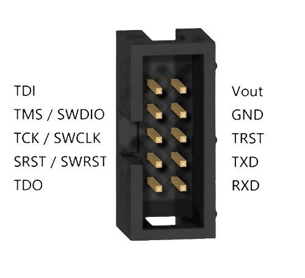

Vllink Basic 快速上手
调试接口定义

接口 |
介绍 |
|---|---|
TDI |
JTAG数据口 |
TMS / SWDIO |
JTAG模式口、SWD数据口 |
TCK / SWCLK |
JTAG时钟口、SWD时钟口 |
SRST / SWRST |
芯片复位口 |
TDO |
JTAG数据口 |
Vout |
双向电源口1 |
GND |
共地口 |
TRST |
JTAG复位口 |
TXD |
串口输出 |
RXD |
串口输入 |
[1] Vout口使用说明
模式介绍及切换
模式切换
可通过双击按键切换运行模式
基本模式有三种，分别是有线模式、无线接收模式（AP）以及无线发送模式（STA）
有线模式
板上红灯、黄灯亮起
USB设备启用，可与USB主机通信
调试口可连接目标板
无线接收模式（AP）
板上红灯、黄灯亮起，板上蓝灯作为连接指示状态灯，未连接时闪烁、已连接后常亮
USB设备启用，可与USB主机通信
注意：若在蓝灯闪烁时，启动调试、CDC串口功能，将会启用板上调试口，而非远端调试口。
无线发送模式（STA）
板上黄灯亮起，板上绿灯作为连接指示状态灯，未连接时闪烁、已连接后常亮
USB设备关闭，不可与USB主机通信
有线模式连接示例

图中调试器为有线模式，硬件为5V版本，且配置文件中
Vout=enable，故调试器可为目标板提供5V电源
无线模式连接示例
1. STA为目标板供电

图中调试器一个为AP模式，不接目标板；另一个为STA模式，USB接电源、调试口接目标板
STA端硬件为5V版本，且配置文件中
Vout=enable，故STA端可目标板提供5V电源注意：3.3V版本的调试器仅能提供3.3V电源，且目标板电流不应超过100mA
2. 目标板为STA供电

图中调试器一个为AP模式，不接目标板；另一个为STA模式，调试口接目标板
STA端硬件为5V版本，目标板可通过Vout口为STA端供电
因为调试器是通过PMOS管控制Vout，即使
Vout=disable，未开启的PMOS也仅等效一个二极管，并不影响STA端的启动，所以此方式不不要求修改配置文件注意：3.3V版本的调试器不支持此种用法
注意事项
调试口信号线高电平为3.3V，已串接220欧电阻，一般可兼容IO电平2.4V至3.8V的芯片
当前无线仅传输CMSIS-DAP协议及CDC协议的数据，不涉及调试器的自身配置参数
升级程序需要使用支持WebUSB的操作系统及浏览器，如Windows10及Chrome内核浏览器
Windows7系统用户请参考下方链接安装驱动
常见问题
问：
WebDfu网页升级时，出现红色警告信息答：只要升级进度条跑满，即完成升级
问：STA不稳定，灯光乱闪或者异常
答：常见于客户使用3.3V通过
Vout口给STA供电的情况，将供电改成5V即可，或者至少锂电池直供
问：调试不稳定，经常卡顿或报错
答：一般是同频段Wifi干扰导致，可通过以下方式手动指定AP频段：
将AP接上电脑，用记事本打开磁盘中的
basic_config.txt修改
AP_2G4_CHANNEL=后面的信道值，推荐13，若13信道干扰严重可调整为1或6保存文本，安全弹出磁盘后，重新上电使用
若可行，应当对设施内无线路由器频段进行管理，合理使用信道资源
问：设备管理器内能发现
CMSIS-DAP V2设备，但是软件却无法访问答：在设备管理器内，右击
CMSIS-DAP V2设备，卸载设备，然后重新连接一次即可解决
问：STA如何与另一个AP配对
答：因为AP与STA结对发货，出厂时已进行配对测试，故无法自动连接其他AP。可通过以下方式清除STA中的配对信息：
将STA接上电脑，双击按键切换至模式一，电脑中出现一个磁盘
用记事本打开磁盘中的
basic_config.txt删除
STA_2G4_SSID=后面的字符串删除
STA_2G4_PASS=后面的字符串保存文本，安全弹出磁盘后，双击按键两次切换至模式三
此时，STA会自动配对新AP，应当保证此时附近只有一个AP处于上电状态